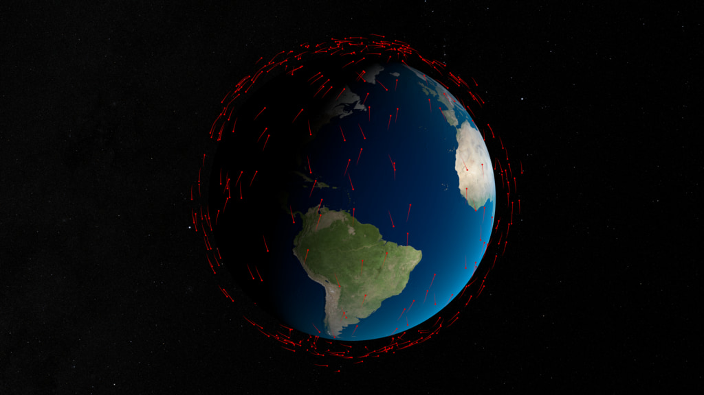

Open infrastructure for global collaboration on space situational awareness
Decentralized peer-to-peer data exchange built on IPFS
SDN provides open infrastructure for global space traffic coordination
Battle-tested libp2p networking with DHT discovery, GossipSub messaging, and circuit relay for browser connectivity.
Fully CCSDS-compliant schemas for standardized space data exchange.
All connections secured with Noise Protocol Framework providing forward secrecy and mutual authentication.
AES-256-CTR field-level encryption with Argon2 key derivation for password-based security.
Cryptographic identities with vCard-style Entity Profile Manifests for verified organizational data.
Run full nodes on servers, edge relays on embedded devices, or connect directly from web browsers.
Proven, battle-tested foundations for mission-critical space data infrastructure
IPFS provides the decentralized networking foundation — libp2p for peer-to-peer transport with NAT traversal and secure channels, content addressing for data integrity, and DHT for decentralized discovery.
Google FlatBuffers provides zero-copy serialization for 160+ Space Data Standards schemas, while FlatSQL enables SQL queries directly over binary FlatBuffer data without conversion overhead.
Two-tier peer topology for maximum reach and reliability
Help strengthen the network by running a full node on a server with a public IP address. Full nodes:
./spacedatanetwork daemon --relay-enabled --announce-public
Requires: Public IP address, open ports (4001 TCP/UDP, 8080 HTTP)
Latest data products are announced by PNM, verified by DPM, and fetched by peer identity
A CelesTrak provider node keeps the latest authoritative OMM product, publishes a signed DPM for each update, and announces that DPM with a signed PNM. Browser and core nodes resolve the latest PNM by provider peer ID and standard, verify the DPM, fetch the listed IPFS assets or provider-mediated query result, and only then import or pin records. SGP4 and other modules use a separate PLG/grant flow from sdn.spaceaware.io.
celestrak.eth pulls source updates and materializes the current OMM record set.
The DPM binds shard/index CIDs, source hashes, schema hash, FILE_ID, query metadata, and provider signature.
A compact PNM announces the latest DPM CID for that provider peer and standard.
Clients verify PNM and DPM signatures, fetch listed assets by CID or query protocol, then import or pin.
SGP4 and other WASM modules are discovered as PLG listings and delivered by grant from sdn.spaceaware.io.
Monetize your space data with built-in commerce
SDN includes a commercial layer enabling data providers to sell access to premium data products. Encryption ensures only paying customers can access purchased content.
Third-party apps use public @spacedatanetwork/sdn-js, @spacedatanetwork/sdn-js/ui, and @spacedatanetwork/sdn-js/storefront imports to discover PLG listings, purchase access, request encrypted WASM delivery, decrypt locally, load through the SDK browser harness, and invoke modules.
Provider publishes one canonical PLG listing for the module version and stores the encrypted WASM bundle by CID.
Requester buys the listing through the public storefront client using credits, crypto, card, or a free grant path.
SDNNode requests a module-delivery grant, fetches the encrypted bundle CID, and receives wrapped content-key material.
The app unwraps the grant key locally, decrypts the WASM bytes, loads the SDK browser harness, and invokes the module.
The marketplace operates on top of the free, open network. Core SSA data exchange remains free and open. Commercial layer is opt-in for premium products.
Public API details and the end-to-end TypeScript example are documented in Storefront & Encrypted Module Delivery.
Complete SSA processing pipeline included with every SDN client
Every SDN installation - whether the full server node or the lightweight JavaScript client - includes a complete open source astrodynamics baseline. No proprietary software licenses required.
SGP4/SDP4 propagators for TLE data, plus numerical integration for high-precision ephemeris. Runs identically in Go and WebAssembly.
Correlate observations with cataloged objects. Match radar tracks, optical measurements, and RF detections to known satellites or identify new objects.
Batch least-squares and sequential filters for orbit determination. Differential correction to refine orbital elements from tracking data.
Screen for close approaches, compute collision probabilities, and generate Conjunction Data Messages (CDM). Built-in hard body radius screening and probability of collision calculation.
All astrodynamics functions are available in both the Go server and JavaScript SDK, enabling consistent processing from cloud infrastructure to web browsers.
The orbital environment is becoming dangerously congested

On February 10, 2009, Iridium 33 (an active U.S. communications satellite) collided with Cosmos 2251 (a defunct Russian military satellite) at a relative velocity of 11.7 km/s (26,000 mph).
The collision occurred at an altitude of 790 km over northern Siberia, creating the largest accidental debris cloud in history.
Neither operator had advance warning. Today, with proper data sharing infrastructure, this collision could have been avoided with a simple maneuver.
Sources: ESA Space Debris Office, Space-Track.org, satellite operator filings. Projections based on approved constellation deployments.
Share conjunction warnings and tracking data globally. Coordinate collision avoidance across international boundaries without diplomatic overhead.
Publish orbital elements in real-time and coordinate maneuvers with other operators. Receive conjunction warnings directly from the network.
Build commercial services on open, verifiable data. Create value-added products without vendor lock-in or exclusive data agreements.
Access live space data for analysis, algorithm development, and academic research without expensive commercial data licenses.
Universities and research institutions can integrate real-time space data into curricula, thesis projects, and collaborative research programs.
Learn astrodynamics with production data. Build satellite trackers, analyze orbital mechanics, or contribute to open source space safety tools.
Compute collision risks on encrypted satellite positions. Nobody sees your orbit — everyone stays safe.
Military and intelligence satellites have classified orbits. Sharing precise ephemeris reveals capabilities, coverage gaps, and mission intent to adversaries.
Constellation geometry is a multi-billion-dollar investment. Precise orbital slots, station-keeping strategies, and coverage patterns are proprietary trade secrets.
Planned maneuvers can be the most sensitive data an operator holds. Encrypted CA lets maneuver ephemeris be screened without broadcasting to competitors that burns, timing, or intent are changing.
Sharing data creates legal obligations. If you share ephemeris and a conjunction is missed, you may bear greater liability than if you had shared nothing at all.
The network computes d² = Δx² + Δy² + Δz² entirely on encrypted data. The math works — the data stays locked.
Only the conjunction assessor can decrypt the result — and the result is a distance, not a position. Neither operator's orbit is ever exposed.
Encrypted ephemeris flows through direct authenticated libp2p streams to the assessor — never broadcast on GossipSub. Ciphertexts are sensitive: if public, anyone could compute HE distances against them.
Operators send encrypted ephemeris via direct streams to a mutually-chosen assessor. The assessor computes distance on ciphertext using Microsoft SEAL (BFV scheme) — ciphertexts never touch the public network.
The security and operational implications for the space industry
For the first time, military and intelligence satellites can participate in global conjunction assessment without compromising operational security. The encrypted protocol ensures that even the network operators cannot determine orbital parameters.
A constellation's orbital geometry represents years of R&D and billions in launch costs. HE-encrypted conjunction assessment lets operators protect their most valuable IP — the precise positions that define their competitive advantage — while still ensuring space safety.
Operators can submit encrypted maneuver ephemeris for planned maneuvers and avoidance burns without broadcasting timing, vectors, or intent to competitors. The assessor sees collision risk, not the maneuver plan.
This is the absolute minimum foundation for a functional, secure space traffic management system. Without privacy-preserving computation, global STM coordination requires operators to trust a central authority with their most sensitive data — a non-starter for most.
HE encryption is integrated at the serialization layer via the he_encrypted FlatBuffers attribute. Mark fields for encryption in your schema — the toolchain handles key management, ciphertext serialization, and homomorphic operations.
Operators stream encrypted ephemeris via direct authenticated libp2p channels to a mutually-chosen assessor node. Assessments run continuously as new encrypted positions arrive — not as a periodic batch job gated by a central coordinator.
Powered by Microsoft SEAL v4.1.1, an industry-standard homomorphic encryption library. BFV scheme with 4096-polynomial degree provides 128-bit security with ~2KB ciphertext overhead per encrypted value.
What stops an adversary from spamming fake ephemeris to triangulate hidden satellites? Defense in depth.
Encrypted ephemeris never touches GossipSub. Ciphertexts flow only through direct authenticated libp2p streams to the assessor. Since HE math is permissionless, public ciphertexts would let anyone compute distances against them with arbitrary probes.
Each SDN identity must post a cryptographic bond or accumulate reputation before participating in HE assessments. Malicious behavior triggers slashing — making Sybil attacks economically prohibitive.
Each identity is limited to N ephemeris submissions and M assessment requests per epoch. Limits scale with reputation and stake, preventing brute-force grid scanning.
Assessments return a binary SAFE/ALERT, not the computed distance. Precise distance is only disclosed when both parties opt in after an alert — reducing information leakage per query to a single bit.
The network monitors for scanning signatures: grid-spaced positions, systematic orbital sweeps, and ephemeris that violates Keplerian motion. Suspicious patterns trigger identity flagging and stake forfeiture.
Calibrated Laplace noise is added to the encrypted distance before threshold comparison. Multiple queries against the same target produce inconsistent results, defeating triangulation attempts.
Design principle: Ciphertexts are sensitive — HE arithmetic is permissionless, so anyone with your ciphertext can compute against it. The primary defense is architectural: encrypted ephemeris never leaves a private channel to the assessor. Beyond that, each assessment reveals at most one bit, requires bilateral consent, costs stake, is rate-limited, and includes noise.
Encrypted conjunction assessment is live in the SDN release path with private maneuver ephemeris screening, signed provenance, and threshold disclosure controls for space traffic management.
End-to-end encryption with verifiable digital identity
SDN uses purpose-separated public identities and encrypted transport. Credential and signing operations run only in the isolated wallet application.
Rational actors drain compromised keys. Undrained value proves key integrity.
Cryptographic public keys can derive addresses on cryptocurrency networks. By depositing value at those derived addresses, you create a game-theoretic security bond. A rational actor who compromises the private key will drain the funds — the payout is immediate, anonymous, and risk-free. This makes the balance a real-time indicator of key integrity: undrained value implies an uncompromised key, because no rational adversary would sit on a free withdrawal.
A public key used for signing data can mathematically derive addresses on multiple blockchain networks (BIP-32/44). One key pair serves both authentication and value custody — no additional infrastructure required.
Derived addresses are permissionless — anyone can deposit funds to signal trust in a key. The depositor stakes value on the key's integrity: self-bonding (owner deposits) or third-party bonding (others deposit). The aggregate balance quantifies the economic cost of compromise.
A compromised key gives the attacker access to both impersonation and fund withdrawal. Draining funds is the dominant strategy: it's immediate, irreversible, and carries zero marginal risk since the key is already compromised. Multiple adversaries with the same key create a race condition that accelerates drainage. Undrained value therefore implies no compromise.
Blockchain state is publicly auditable and updates every block. This provides continuous, permissionless proof of key integrity — not a point-in-time certificate, but a live signal. Any observer can independently verify the balance without trusting a certificate authority or revocation list.
Account-derived addresses and approval identities are shown by the isolated SDN Account interface after an explicit login.
Everything you need to build with SDN
Get running in minutes
# Clone and install
git clone https://github.com/DigitalArsenal/space-data-network.git
cd space-data-network
npm install
# Build the UI and launch the desktop app
npm run desktop# macOS/Linux
curl -fsSL https://spacedatanetwork.org/install.sh | bash
# Windows PowerShell
irm https://spacedatanetwork.org/install.ps1 | iex
# Start a persistent local node
spacedatanetwork startimport { SDNNode } from './sdn-js/dist/esm/index.js';
const node = new SDNNode();
await node.start();
// Subscribe to orbital data
node.subscribe('OMM', (data, peer) => {
console.log(`Received from ${peer}`);
});
// Publish conjunction data
await node.publish('CDM', conjunctionData);Get on the network: identity, consume, publish, and sell
Quick start guides for all platforms
Deep dive into SDN internals
Walk through signed data, DPM and PNM publication, module listings, optional encryption, subscriptions, and pinning in a browser sandbox.
Cryptography and identity
Complete API documentation
Space Data Standards reference
Production deployment guides
The sites that make up the standards, storage, network, and module toolchain
Canonical space data schemas and generated language bindings.
Binary encoding, schema tooling, and runtime documentation.
SQL-style queries over FlatBuffer-backed datasets and streams.
Distributed publication, discovery, delivery, and marketplace infrastructure.
Build and validate WebAssembly modules for SDN host runtimes.
No. SDN uses cryptographic primitives (keys, signatures) but is not a blockchain. There are no tokens, no mining, no consensus mechanisms. SDN is pure infrastructure for data exchange. Your identity can be derived from BIP-39 seed phrases and is compatible with blockchain ecosystems, but SDN itself operates independently.
Space traffic management data is too critical to depend on any single provider. Centralized systems create single points of failure and geopolitical dependencies. SDN ensures that conjunction warnings and orbital data remain available even if individual nodes or organizations go offline. The network self-heals and routes around failures.
SDN is complementary infrastructure that enables organizations to share data directly with each other. Here's how it relates to existing SSA data providers:
Unlike centralized services, SDN has no single point of failure, no usage quotas, and enables direct peer-to-peer data sharing with cryptographic verification of data provenance.
Yes. SDN includes edge relays that bridge WebSocket connections to the full P2P network. The JavaScript SDK handles this automatically - just call node.start() and you're connected. Browsers can subscribe to real-time data, publish messages, and verify signatures.
Every message on SDN is cryptographically signed by its publisher. Entity Profile Manifests (EPM) link public keys (derived from the publisher's private key) to organizational identities. You can verify exactly who published any piece of data and whether it has been tampered with. Trust decisions remain with recipients - SDN provides the cryptographic tools.
Due to the distributed nature of IPFS and libp2p, there is no central authority that can remove data from the network. Content is replicated across participating nodes and addressed by its cryptographic hash. Only the original author who holds the signing key can issue updates or retractions. This is by design - it ensures that critical space safety data cannot be censored by any single entity, but it also means participants should carefully consider what they publish. Nodes can individually choose to stop pinning or serving specific content, but this doesn't remove it from other nodes that have copies.
Only Space Data Standards (SDS) formatted data is allowed on the network. This ensures interoperability and allows all participants to parse and validate incoming data.
To onboard your data:
SDS FlatBuffers are always backwards compatible by design - new fields can be added without breaking existing parsers. See the FlatBuffers schema evolution documentation for details. The network software automatically updates when new SDS versions are released.
Step-by-step instructions: Onboarding Guide.
Get the Space Data Network tools for your use case
Versioned SDN release artifacts for infrastructure operators.
GUI application for end users, published from the same beta release lane as CLI and server artifacts.
Connect from Node.js or browsers - lightweight client for web applications
cd sdn-js
npm installJoin the open network for space data exchange